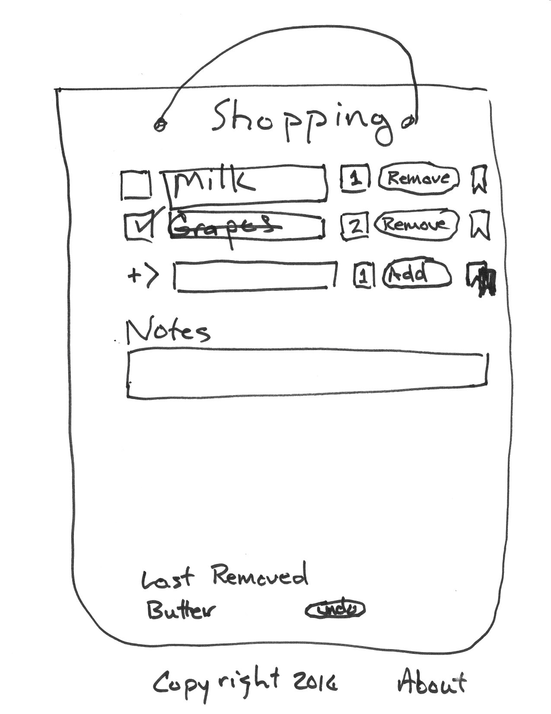
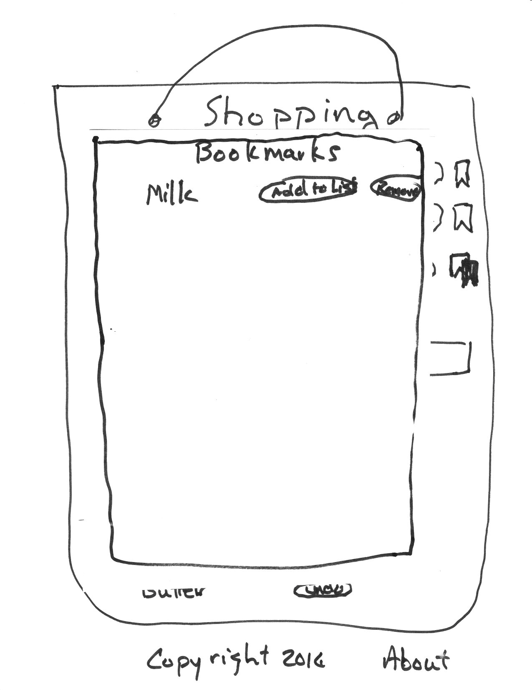

Shopping cart requirements. User should be able to:
- ...add items with quantity.
- ...mark items as acquired. When so marked, item will grey out or otherwise indicate new status.
- ...change items in the list. Assume each item stays within a text input field for easy changes (don't require an "edit" mode).
- ...remove items from list. When removed, the most recent removed item will appear in a list called "Last Removed" where the user can undo the removal.
- ...make notes in a text field for general comments related to the list.
Stretch: allow for bookmarked or "regular" items
- Have a "bookmark" option next to each item in the main list. When clicked, add to the bookmark list. Possibly change the color or otherwise indicate the item is on the bookmark list.
- Button that opens the bookmarked items
- Bookmarked items allow adding to current list or removal from bookmarks.
- Have an "add all items to list" option for easy and quick shopping list initialization (which is *not* a word a regular user would use).

